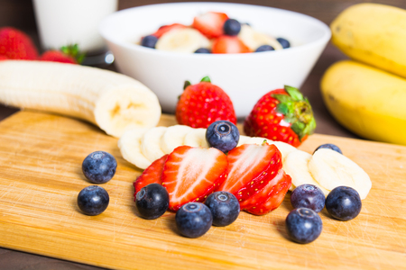
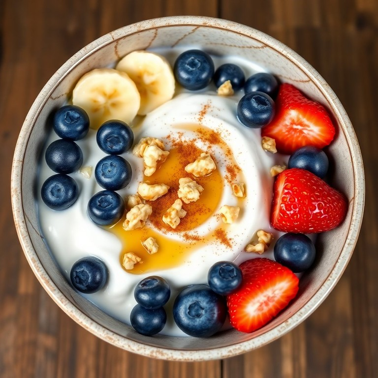
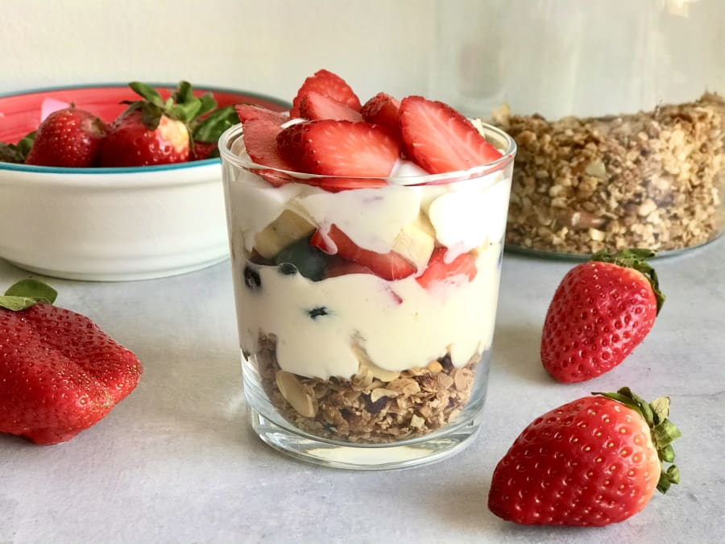

Tornar a la pàgina principal
Ingredients
- 2 iogurts grecs naturals
- 150 g de fruita (maduixes, plàtan, nabius)
- 1 cullerada de mel (opcional)
Pas a pas
- Talla la fruita en trossos (ex: 150 g en total).

- Barreja la fruita amb el iogurt i afegeix 1 cullerada de mel si vols.

- Serveix en gots i decora amb fruita extra.
